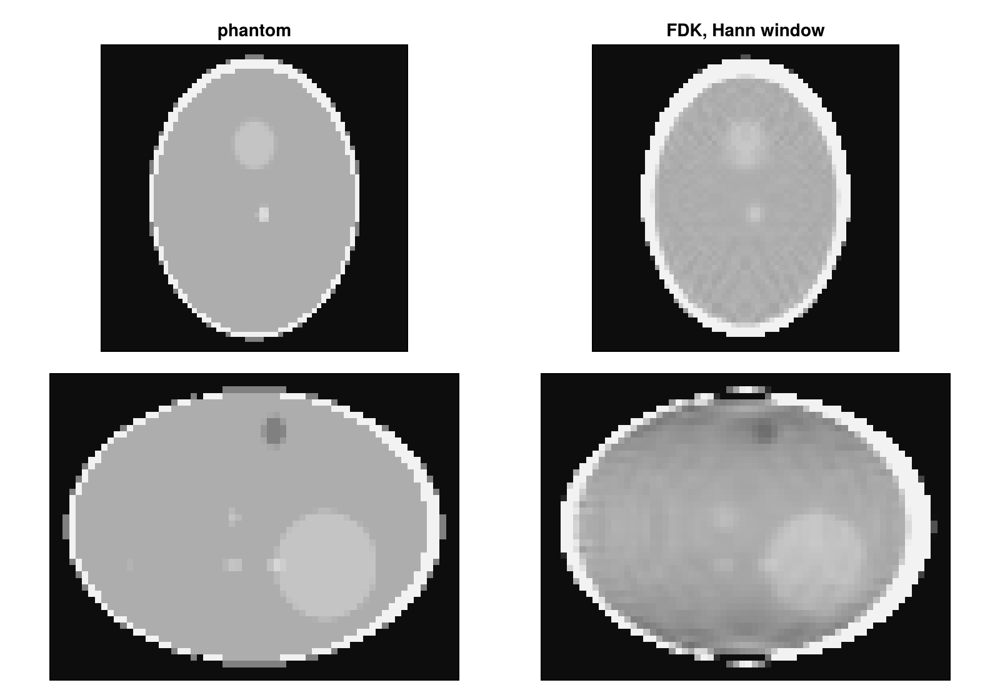
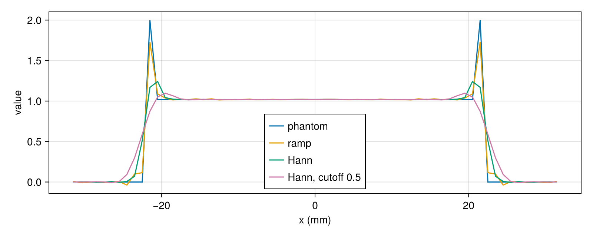
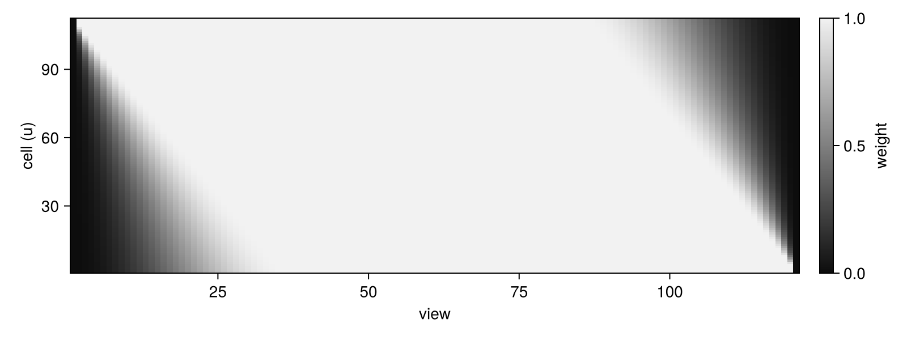
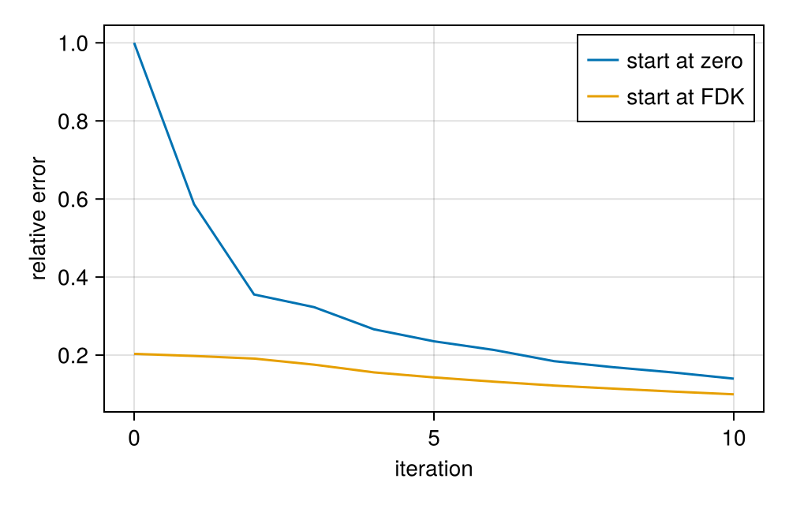

Reconstruct with FDK
FDK (Feldkamp, Davis & Kress 1984) reconstructs a circular cone-beam scan in one pass, without iterations: weight the data, filter each detector row with a ramp filter, back project. For parallel beams the same steps are filtered back projection (FBP); Filtered Back Projection explains why they recover the image. This guide reconstructs a 3D Shepp-Logan phantom with FDK, compares the windows of the filter, reconstructs a short scan, and uses the result as the start image of an iterative method.
using CTOperators, ImagePhantoms, RegularizedLeastSquares, LinearOperatorCollection, CairoMakie, LinearAlgebra
using ImageGeoms: axis
using ImagePhantoms: ellipsoid_parametersPhantom and data
The 3D Shepp-Logan phantom in a volume of 64 × 64 × 48 voxels of 1 mm, and a circular scan with a flat detector: 180 views over one turn, the source 200 mm from the axis, the detector 400 mm from the source, cells of 2 mm (1 mm at the axis). The data are the forward projection of the phantom with Joseph's method.
image = ImageGeom(; dims=(64, 64, 48), deltas=(1.0, 1.0, 1.0))
phantom_ellipsoids = ellipsoid(ellipsoid_parameters(; fovs=(64, 64, 48)))
x_true = Float32.(phantom(axis(image, 1), axis(image, 2), axis(image, 3), phantom_ellipsoids, 2))
geometry = circular_cone_beam(; angles=range(0, 2pi, 181)[1:180], dso=200, dsd=400, nu=112, nv=64, du=2.0)
op = JosephProjector(image, geometry)
y = op * x_true;Reconstruction
FDK(image, geometry) prepares the filter, the FFT plans and the buffers; applied to the data it returns the image. The plan can be reused for further data of the same scan. CTOperators.fdk(image, geometry, y) (public, not exported) does both in one call.
plan = FDK(image, geometry)
x_fdk = plan * y;The axial slice through the middle of the volume and the sagittal slice through the axis (z up), with a gray scale from 0.95 (black) to 1.05 (white) for the small contrasts inside the skull:

The axial slice shows a faint pattern of streaks from the finite number of views. The sagittal slice deviates more from the phantom towards its top and bottom: away from the plane of the orbit, FDK is an approximation (Feldkamp et al. 1984).
Windows
A window lowers the ramp filter towards high frequencies: the keyword window takes :ramp (no window), :hann (the default), :hamming, :cosine, :shepplogan or a function w(f) of the frequency f as a fraction of the cutoff (0 ≤ f ≤ 1), and cutoff the highest frequency passed, as a fraction of the Nyquist frequency of the cells (Write FDK Windows and Weights passes windows and weightings of its own). A profile through the axial slice, along x:
x_ramp = CTOperators.fdk(image, geometry, y; window=:ramp)
x_half = CTOperators.fdk(image, geometry, y; window=:hann, cutoff=0.5)
The relative errors of the whole volume:
[(window=name, error=round(norm(x - x_true) / norm(x_true); sigdigits=3))
for (name, x) in (("ramp", x_ramp), ("Hann", x_fdk), ("Hann, cutoff 0.5", x_half))]3-element Vector{@NamedTuple{window::String, error::Float32}}:
(window = "ramp", error = 0.138)
(window = "Hann", error = 0.203)
(window = "Hann, cutoff 0.5", error = 0.277)On these data, free of noise, the plain ramp gives the smallest error.
Short scans
A full turn measures every line twice, from opposite sides. Half a turn plus the fan angle (the angle between the outermost rays of a view) measures every line at least once; the lines measured twice need weights that add up to 1, ParkerWeights (Parker 1982), keyword redundancy. The default, FullScan, rejects such a scan with an ArgumentError. Here half the fan angle is that of the outermost cell centers, 111 mm from the center of the detector at 400 mm from the source:
fan = atan(111 / 400)
short = circular_cone_beam(; angles=range(0, pi + 2fan, 121), dso=200, dsd=400, nu=112, nv=64, du=2.0)
y_short = JosephProjector(image, short) * x_true
x_short = CTOperators.fdk(image, short, y_short; redundancy=ParkerWeights());The weights of the middle row of the detector, for every cell and view: the first views count little for the cells on one side of the detector, the last views for those on the other side, and the weights fall to 0 at the first and the last view.

The relative errors of the short scan and of the full scan (both with the Hann window):
[(scan=name, views=n, error=round(norm(x - x_true) / norm(x_true); sigdigits=3))
for (name, n, x) in (("short", 121, x_short), ("full", 180, x_fdk))]2-element Vector{@NamedTuple{scan::String, views::Int64, error::Float32}}:
(scan = "short", views = 121, error = 0.225)
(scan = "full", views = 180, error = 0.203)Start image for an iterative method
An iterative method starts from an image, for example zero or the FDK image. With CGNR from RegularizedLeastSquares.jl, starting from x_fdk is the same as solving for the correction x - x_fdk from the residual of the data, starting from zero:
function cgnr(x0; iterations=10)
errors = Float64[]
solver = createLinearSolver(CGNR, op; AHA=normalOperator(op), iterations)
dx = solve!(solver, vec(y - op * x0);
callbacks=(s, _) -> push!(errors, norm(solversolution(s) + vec(x0) - vec(x_true)) / norm(x_true)))
x0 + reshape(dx, size(x0)), errors
end
x_cg, errors_fdk = cgnr(x_fdk)
x_zero, errors_zero = cgnr(zero(x_true));The error after each iteration (0: the start image), from zero and from the FDK image. Here the FDK image is the better start: after 10 iterations its error is lower than that from zero.

Requirements
FDK needs a circular scan:
- the source on a circle about the rotation axis, in a plane perpendicular to it (no helix);
- the rotation axis along the detector columns (
v), the detector rows (u) perpendicular to it, a flat detector perpendicular to the ray from the source to the axis, the same cell width in all views; - views in order along the circle; the angle steps may differ.
Geometries that break these give an ArgumentError. How much of the circle the views must cover is set by the keyword redundancy, an AbstractRedundancy: how lines measured more than once are weighted. FullScan, the default, needs the whole circle (parallel beams: half or the whole circle) and weights every view with half its angle step, since a full scan measures every line twice; ParkerWeights needs at least half the circle plus the fan angle, up to one turn. Weights computed elsewhere can be passed as arrays with ArrayRedundancy: a weight per data element and a weight per view; only their sizes are checked. Whether the detector covers the whole object in every view is not checked: data of an object that reaches beyond the rays of the detector give a wrong image.
circular_cone_beam (flat or arc detector, with offsets) and parallel_beam build such scans, and geometries of Sinograms.jl work through projection_geometry. With Sinograms.jl loaded, its function fdk also takes an FDK plan, fdk(plan, y), or the image and a geometry of this package, fdk(image, geometry, y).
The back projection is that of the VoxelDrivenProjector, with the weights of FDK; on a GPU, pass storage as for the projectors (see Run on a GPU).
References:
- L. A. Feldkamp, L. C. Davis, J. W. Kress, "Practical cone-beam algorithm", J. Opt. Soc. Am. A 1(6), 612–619, 1984.
- D. L. Parker, "Optimal short scan convolution reconstruction for fanbeam CT", Med. Phys. 9(2), 254–257, 1982.
This page was generated using Literate.jl.